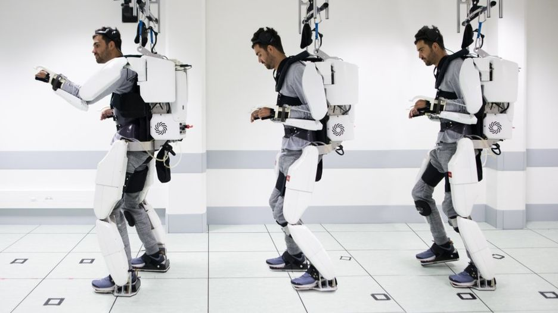

Man paralysed in accident 4 years ago regains the ability to walk through technology
Exoskeleton mind reading suit leads the way forward
4 years ago an optician fell from a balcony of a nightclub and ended up paralysed due to damage on his spinal cord, After the 15m fall he spent the next two years of his life in a hospital until in 2017 he agreed to take part in an exoskeleton trial with clinatec and the univeristy of grenoble. To begin he practiced using brain implants to control a virtual charager in a video game, and once he had enough practise doing this he began to use the suit.

Researchers are saying that movemenetsm, particularly walking, is far from perfect and the suit is currently only being used in a lab, however they believe the approach could massively improve patients quality of life
The man had surgery to place two implants on the surface of the brain, covering the parts of the brain that control movement along with sixty-four electrodes on each implant in order to read the brain activity and deliver instructions to a nearby computers.
 LINK BACK TO HOME PAGE